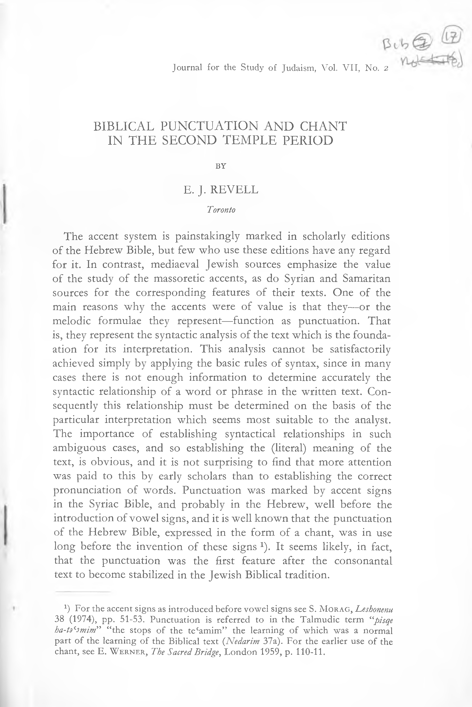

07a.17 Biblical Punctuation and Chant in the Second Temple Period
Journal for the Study of Judaism, Vol. VII, No. 2
BIBLICAL PUNCTUATION AND CHANT IN THE SECOND TEMPLE PERIOD
BY
E. J. REVELL
Toronto
The accent system is painstakingly marked in scholarly editions of the Hebrew Bible, but few who use these editions have any regard for it. In contrast, mediaeval Jewish sources emphasize the value of the study of the massoretic accents, as do Syrian and Samaritan sources for the corresponding features of their texts. One of the main reasons why the accents were of value is that they—or the melodic formulae they represent—function as punctuation. That is, they represent the syntactic analysis of the text which is the founda- ation for its interpretation. This analysis cannot be satisfactorily achieved simply by applying the basic rules of syntax, since in many cases there is not enough information to determine accurately the syntactic relationship of a word or phrase in the written text. Con sequently this relationship must be determined on the basis of the particular interpretation which seems most suitable to the analyst. The importance of establishing syntactical relationships in such ambiguous cases, and so establishing the (literal) meaning of the text, is obvious, and it is not surprising to find that more attention was paid to this by early scholars than to establishing the correct pronunciation of words. Punctuation was marked by accent signs in the Syriac Bible, and probably in the Hebrew, well before the introduction of vowel signs, and it is well known that the punctuation of the Hebrew Bible, expressed in the form of a chant, was in use long before the invention of these signs 1). It seems likely, in fact, that the punctuation was the first feature after the consonantal text to become stabilized in the Jewish Biblical tradition.
1J For the accent signs as introduced before vowel signs see S. Morag, Leshonenu 38 (1974), pp. 51-53. Punctuation is referred to in the Talmudic term “pisqe ha-ta^mim” “the stops of the tecamim” the learning of which was a normal part of the learning of the Biblical text (Nedarim 37a). For the earlier use of the chant, see E. Werner, The Sacred Bridge, London 1959, p. 110-11.
182
E. J. REVELL
I. The Punctuation of Barthelemy’s Text of the Twelve Prophets (Bar.)
The earliest known example of punctuation in a Biblical text occurs in a Septuagint text of the second century BC, papyrus 957, which is punctuated by spaces corresponding almost exactly to the Tiberian accents in the Hebrew text, as I have shown in an earlier article 2). The next earliest example occurs in the Greek translation of the Twelve Prophets published by Barthélemy (hence-forward 4‘Bar.” 3). I argued in the same article that this punctuation also is related to the Tiberian accentuation. Since writing that, however, I have been fortunate enough, thanks to the kind help of Prof. Barthélemy, P. Benoit O. P., and Dr Magen Broshi, to obtain photographs of all the fragments of this text 4). The following table shows that the punctuation shown in these photographs does not correspond closely to any group of the accents of BHK 5). A division corresponds to silluq in 63 of 65 cases (93%) atnah in 27 of 33 cases (82%) ^aqef in 41 of 61 cases (67%) revia 6) in 8 of 25 cases (32%) in 3 tifha 7) conjunctives 8) in 2 2) See “The Oldest Evidence for the Hebrew Accent System״ BJRylL 54
(1971-2), p. 214-222.
3) The MS of the Twelve Prophets was described by P. Barthélemy, O.P., in RB 60 (1953), p. 18-29, and published by him in Les dévanciers d* Aquila (= VTS X, Leiden 1963). A few more fragments from the MS were published by B. Lifshitz in Yediot 26 (1962), p. 183-190.
4) I wish to express here my deep gratitude to those named for their help, and, further, to Dr Magen Broshi of the Shrine of the Book at the Israel Museum for providing me with photographs of the MS, and for granting me permission, on behalf of the Shrine of the Book, to publish a study based on them, and to P. Benoit O.P. for granting me similar permission on behalf of the committee in charge of publication of the series Discoveries in the Judaean Desert, in which full publication of this MS will soon take place.
δ) BHK, the third edition of Kittel’s Bihlia Hebraica is the representative of the Hebrew text used here. Barthélemy, Lesdévanciers (p. 168, n. 6) disagrees with the identifications proposed by Lifshitz for some of the fragments which he published. Of these, only fragment 8 is of interest to this paper. I have accepted Barthelemy’s identification of this as more likely than that of Lifshitz, and so recorded a division at Na 3, 3, but in my own opinion this too is doubtful.
6) One of these in Jon 4, 2 is questionable (see below, n. 22). 7) Mi 1, 6; 5, 2; Hb 2, 5. There is possibly a further example in Ze 1, 14 και ταχεία where the kappa seems enlarged, but Barthélemy is probably correct in not marking this.
8) Mi 1, 3 και [επιβησεται] ; Na 3, 9 και λιβυ[ες]. The corresponding words
BIBLICAL PUNCTUATION AND CHANT
183
Furthermore there are three types of division; marking paragraphs, and two types of unit within these paragraphs which can be called “sentences” and “clauses”. Only 28 of the 45 “sentence” divisions (62%) correspond to verse divisions in BHK. Consequently it must be concluded either that these divisions are not based on the Jewish Biblical chant, or that they are based on a form of it quite different from the received tradition.
Paragraphs in this text are marked by a paragraphs in the left hand margin below the last line of a unit. Any space at the end of this line is left blank. The first letter of the new unit is written in the left hand margin, and is usually considerably enlarged. This system can be seen at Jon 3, 10 and Hb 3, 14. In other cases one side or the other of the column is broken away, so that either the marginal letter, or the space at the end of the preceding line is lost. 17 paragraph divisions are marked in all (including the space before the beginning of the book of Mica). 11 of these (65%) correspond to paragraphs in BHK. In two cases a paragraph is marked in BHK but not in the Greek text. The paragraph division in this text, then, is not very close to that of the received text, although apparently related to it.
Divisions within these paragraphs are marked as follows:
(a) Sentence divisions
A space about the width of one letter is left after the end of a unit. The first letter of the new unit is then written slightly enlarged. In two cases the first letter of a new unit is written, slightly enlarged, at the left hand margin, with a paragraphs above it. Presumably this was done when the preceding unit ended at the end of a line, but, where this occurs (Na 3, 8. 10), the right hand margin is broken away 9).
(£) Clause divisions
No significant space is left between two units. The only mark
in BHK follow merka and munah. In addition to the cases listed in which stops correspond to minor Jewish accents, there is possibly a case corresponding to pasbta in PaXoufuLv] Na 3, 10, where the beta is considerably larger than the other example on the fragment. Barthelemy does not mark this as a stop, and indeed no stop is expected here, nor is one marked in codices A, B or S. Surprisingly, however, there is one in W.
9) The paragraphos in these cases may not mark a division, for a paragraphos is used in several cases where a division must have occurred within the line. This marker may, then, be used in some cases to indicate significant content rather than divisions of the text. There is a probable example in Jon 4, 2 (see note 22).
184
E. J. REVELL
of this type of division is the fact that the first letter of the new unit is written slightly larger than the last of the old or at a different level 10). In a few cases, the first letter of a new unit is written, slightly enlarged, at the left hand margin 11). Presumably in such cases the preceding unit ended at the end of a line.
According to my lists, there are 45 divisions of type (a), the sentence division, in the fragments. They can generally be said to mark off units of sense of lesser significance than those marked by paragraphs— usually consisting of two or three clauses12). Thus at Hb 2, 18 where BHK marks a paragraph but Bar. does not, a sentence division not a clause division is used 13). The nature of the unit marked off by this type of division is reflected grammatically by the fact that such units rarely start with και. There are five examples of this where the unit stands at the beginning of a verse in the Jewish tradition, and one where it opens a new speech within the verse, καίγε occurs at the beginning of a unit of this sort twice in Na 3, 10: at the begin ning of the verse, (καίγε αύτη) and within it (καίγε τ[α νήπια] ) where the subject changes from “she” to “her children” (after the %aqef in BHK). Similarly this type of division rarely begins with ότι introducing an explanatory clause. This occurs at Hb 1, 6; 2, 8 at the beginning of the verse (but the latter case is questionable). In contrast, a division of this type begins with δια introducing an explanation in Mi 1, 8; 3, 6; Hb 1, 16 at the beginning of a verse, and in Hb 1, 15; 2, 17; Ze 3, 7 within the verse. This type of division
10) See Bathélemy, Les devanciers, p. 166. n) It is characteristic of this, as of some other early MSS, that the letters at the left hand margin tend to be larger than those of the rest of the line. It is, therefore, sometimes difficult to decide when such a letter is intended to mark the beginning of a new division, and when it is not. E.g. in Zech 3, 5 και έπεθηκαν the initial kappa is marked by Barthélemy as large, while that of κιδαριν, on the preceding line, is not, although it appears at least as tall. It seems to me possible that in this MS, as in some later ones, where a minor unit ended at the right hand margin, so that the next unit began on the next line at the margin, no marker of division was considered necessary, although one might be used. This could be demonstrated in many MSS. For a particularly clear example see Papyrus Bodmer xxiv, psaumes XVII-CXVIII, ed. R. Kasser and M. Testuz, Geneva 1967. E.g. in Ps 76 (Heb 77), stichs in verses 3. 10. (16 before διαψαλμα) and 20 end at the margin with no marker, but after stichs in verses 2. 5. 7 and 14, a marker is used in this position.
12) Due to the broken state of the text it is rarely possible to show the content of one of these divisions definitely. As will be seen, however, a clear idea can be derived from comparison with Cod A.
13) At Mica 5, 6, the other case where this may occur, the text is too badly
damaged for certainty.
BIBLICAL PUNCTUATION AND CHANT
185
is also used, anomalously, to separate lesser grammatical units in Mi 1, 1 before εν [ήμεραις] and after Ιούδα14).
According to my lists, there are 85 divisions of type (b), the clause division, in the fragments. They divide sense units smaller than those marked off by the sentence division, usually single clauses 15). The lesser nature of the units so marked is indicated grammatically by the fact that these clauses are often co-ordinate. Units following a division of this type begin with και at the start of a verse in 9 cases, and within a verse in 40 cases 16). Such units begin with καίγε only in Zech 3, 7, in two cases, both within the verse. Similarly, explanatory units following a division of this type begin with ότι in seven cases, one of which is at the start of a verse 17), but with δια τούτο the only possible case is Mi 5, 2 where the units begins at the margin. In a few cases, the unit following a division of this type is only a phrase 18).
The syntactical basis of the division is clearly visible in the cases where BHK has a major pausal accent {silluq, atnah, or %aqef) but Bar. shows no corresponding division. Thus, in the 20 cases where no division is marked corresponding to BHK ^aqef^ the %aqef occurs within a clause in 16 cases. In the four other cases the unit following the division is a short clause introduced by και.
In the six cases where no division corresponds to BHK atnah, the atnah occurs within a clause in two (Hb 2, 14; 3, 14). In two the unit following the accent is introduced by an explanatory clause
14) These divisions are perhaps due to the fact that this verse is set off as a title (the following space is bigger than normal for a sentence division, although others nearly equal it—e.g. at Hb 2, 20). Other cases of the use of unusual divisions in a position of particular significance can be found in other MSS, e.g. the codices A and W both mark stops after Bethlehem and Ephratha in Mi 5, 1.
15) A “clause” is here defined as the unit composed of a verb form with its subject and modifiers (if any), or syntactically equivalent non-verbal structures (“nominal clauses”). Note, however, that in the MSS discussed in this paper, subordinate (relative or temporal) clauses are not normally marked off by punctuation.
16) There are three other cases in which a unit begins with και, but where a
space might precede it.
17) There are two other cases in which a unit begins with ότι, but where a
space might precede it.
18) So Mi 1, 6; 5, 2; Ze 1, 16 (prepositional phrases). There is no obvious reason for their being treated in this way. In Na 3, 9 there is a division after φουδ. In some texts (e.g. A) this is a division between clauses, but in the received Jewish text put ( = φουδ) is the first of two nouns forming a compound subject. If this were also the case in Bar., the division might be explained as due to the type of “list situation” described in note 38 below.
186
E. J. REVELL
introduced by 6tl (Hb 1, 16; 2, 18) 19). In Jon 4, 1 the unit following the atnah is a very short clause introduced by xou. In Hb 2, 19 the unit following the atnah is difficult to understand in the received Hebrew text, but both there and in the Greek it seems to introduce a new idea, and it is possible that the lack of a division in Bar. is due to scribal error 20).
There are two cases in which Bar. shows no division corresponding to a verse division in BHK. Ze 1, 5 begins with a noun phrase (preceded by a conjunction in the Hebrew but not in Bar.), and forming part of the object of a verb in the preceding verse. Na 2, 6 opens with a new clause, so that a division preceding it would be expected. Because of the state of the fragments it is not absolutely certain that a division did not precede this verse 21). However this may be another case of scribal error.
Further evidence that the system of division shown in this MS depends on grammatical features, not on the traditional division of the Jewish text, is provided by the cases in which a division in the Greek text corresponds to a minor pausal accent, or a conjunctive accent, in the Jewish tradition. In the eight cases in which a division corresponds to BHK revia, the unit following the accent is always a clause, although in two of these cases it is a speech introduced by the preceding unit 22). Where a division corresponds to tifha in BHK, the following unit is a clause in Hb 2, 5. In Mi 1, 6 and 5, 2 the following unit is a prepositional phrase. In the first of these cases the phrase is parallel to the preceding, so this is a type of list situation (Cf. the examples in II. 2 below). In the second case there is no apparent reason for the division 23). In Mi 1,3 a division corresponds
19) Possibly also in Ze 2, 10 where Barthélemy marks a division, but this is,
in my opinion, uncertain.
2°) It is possible that Bar. had a variant text, but a division corresponding
to the atnah is marked in A, S, and W, though not in B.
21) It is possible that the text differed from the common LXX reading otherwise than in the omission of και, so that μνησθησεται was not the first word of the verse, as it is in Barthelemy’s reconstruction.
22) Jon 4, 2 and Hb 2, 6. In the first of these cases the text is broken, but there is a paragraphes in the margin, implying a division in the line above. This line would probably have read εύ[ξ]ατο προσ te[tr. και είπεν ώ tetr, ούχ ούτος] The most probable position for the division would be after είπεν, for which Hb 2, 6 offers a parallel.
23) If there is a division before και ταχεία in Ze 1, 14 (see note 7 above) it marks off an adverbial phrase serving as the third of a set of co-ordinate predicates of a nominal clause, and so would also be classed as a “list situation”.
BIBLICAL PUNCTUATION AND CHANT
187
to the conjunctive merka. This separates two clauses 24). In Na 3, 9 a division corresponds to the conjunctive munah. This is probably also to be interpreted as a type of list situation 25).
The system of punctuation used in this text clearly requires that, as a general rule, the ends of clauses, but not of smaller units, be marked. The division is not fully consistent; sometimes closely joined clauses are not separated, and occasionally divisions are marked between units below clause level. The general pattern is, however, clear and uniform. Furthermore other Greek manuscripts are punctuated on the same basis. In papyrus 965 (early third century) and 966 (possibly somewhat earlier) punctuation is marked by a space about the width of an average letter in which a dot is marked. In other papyri, punctuation is marked only by dots, which are certainly secondary in the sense that they were not marked by the scribe as he was writing the text, for no space was left to accommodate them. There is, however, no way of telling when such dots actually were added to the text, and it could have been the original scribe who did this 26).
In the same way, the date of the punctuation which appears in the “Great Uncial Codices” is, in most cases, uncertain. That in A, however, is marked by spaces, and is, therefore, original 27), showing that in this case at least—and so quite possibly in the others—punctua tion was an important feature of a manuscript, not a casual addition resulting from some reader’s whim. By chance the punctuation of A is closer to that of Bar. than that of the other codices (B, S and W) which were checked for this study. Where both texts are extant, Bar. marks 147 paragraph, sentence, or clause divisions. A marks 123 of these (84%) 28) and 22 other divisions. Furthermore there
24) xat] xaTa^TjaeTai (merka) Kat, [sKipyjasTai . . . 25) See note 18. If there is a stop corresponding to pashta in Na 3,10 (see note 8) this also separates a prepositional phrase from the verb it modifies for no apparent reason.
26) Cf. the different views expressed by F. G. Kenyon in The Chester Beatty Biblical Papyri fasc. VII, London 1937 p. ix and A. C. Johnson and others in The John H. Scheide Biblical Papyri, Ezekiel, Princeton 1938, p. 15, on the punctua tion of papyrus 967.
27) Occasionally a dot is marked where, probably through scribal carelessness, no space had been left. However it is of no consequence to the present argument whether these dots in A were marked by the original scribe or not.
28) In 8 cases where Bar. marks a stop but A does not, the unit in A ends at the margin. As stops could have been used here, though not marked (see note 11) the proportion of agreement could be as high as 90%.
188
E. J. REVELL
are two levels of division in A. The larger division is marked by a system of spaces in the line, and large letters in the margin, similar to that used to mark the paragraphs of Bar. Smaller units within these are marked by spaces about the width of an average letter, in which a dot is placed. A marks 50 larger divisions in this passage, of which 40 (80%) correspond to sentence or paragraph divisions in Bar. Of 95 smaller divisions marked in A, only 11 (12%) correspond to paragraph or sentence divisions in Bar 29). Moreover the relation of punctuation to syntax in A is—as is shown both by this comparison and in the analysis below—very similar to that in Bar. It is consequently, clear that the punctuation of the two texts follows the same pattern. We can, therefore, take A as an example of the type of punctuation employed in Bar., and use it as such, where Bar. is not preserved, for comparisons with other texts 30).
II. The Punctuation of Samaritan MSS
One subject for comparison which immediately suggests itself is the Samaritan accentuation. The punctuation which it represents is, superficially at least, very similar to that of Bar. Paragraphs are marked. These are divided internally into major units by afsaq, and these in turn are divided into minor units by other accents 31). In the available MSS there is a high level of agreement on the marking of paragraphs, and of the major stops within paragraphs. However there is much less agreement in the marking of minor stops, and very little agreement over which particular accent sign should be used to mark any given stop 32). Consequently, comparison with A must be made simply in terms of stops, as there is no possibility of comparing major and minor divisions unless a single MS is arbi trarily chosen to represent the Samaritan system.
29) 66 (69%) correspond to clause divisions in Bar., and 18 (19%) are used
where Bar. has no division.
3°) It can be assumed here that the punctuation in A derives from indepedent grammatical analysis. This seems unlikely to me, but the very interesting problem of the origin of this punctuation is beyond the scope of this paper.
31) The Samaritan accents are described in R. Macuch, Grammatik des samaritani- schen Hebräisch, (Berlin 1969) p. 77 f, summarising treatises published by Z. ben Hayyim in The Literary and Oral Tradition of Hebrew and Aramaic amongst the Samaritans, vol. 2, Jerusalem 1957, p. 340 ff.
32) This statement is based on the accentuation of a considerable number of Samaritan MSS collated and published by A. F. von Gall in Der hebräische Pentateuch der Samaritaner (Giessen 1918). For specific information on the use of the sense accents see JSS 19 (1974) p. 26 f.
BIBLICAL PUNCTUATION AND CHANT
189
It is, in fact, necessary to be arbitrary in the selection of any MSS as representatives of the Samaritan punctuation, as some mark it much less freely than others. Those used here have been selected because they do mark punctuation freely, and so may be said to give a more complete picture of it than most. MSS of different date have been deliberately chosen, so that it can be said that the fairly consistent system of punctuation found in them represents, if not the only form of Samaritan punctuation, then at least a form which did exist over a long period as a relatively stable tradition. The MSS used are those listed by von Gall as i) , the oldest known codex, written before 1150, T* written before 1214, and Q, dated 1359-60 33). The punctuation of these is compared with that of A over Genesis chapters twelve and thirteen. Information on the accentuations of BHK is included to show the extent to which the systems do and do not coincide. The Samaritan text is quoted from von Gall’s edition.
- Stops at the ends of clauses
A marks a stop at the end of a clause in 65 cases in this passage, has a lacuna in two of the corresponding positions, but marks a stop in 54 of the remaining 63. marks a stop in 56 of the cases, and Q in 62 34). The corresponding accent in BHK is silluq (34 cases), atnah (15), ^^(12), tifha (2), pashta or revia (one case each).
The Samaritan MSS fail to mark a stop in a total of 15 of these cases, of which four are not marked in two of the MSS, the rest in one only. In 9 of the cases the division to be marked is between co-ordinate clauses, of which one at least is usually short. In two cases the following clause is introduced by ky (explanatory in 12, 10; objective in 13, 10). In the remaining four cases, in which only MS fails to mark a stop, the marking is certainly to be expected. Its omission is undoubtedly inadvertent at the end of verses 16 and 20 of chapter twelve (both cases where A has a sentence division),
33) 4$ is the Cambridge University Library Add. MS 1846. For the dating see P. Kahle, The Cairo Genina, 2nd ed., Oxford 1959, p. 67 note 2. is Add. MS 713 from the same library. Q is British Museum Add. MS 22369. The accentuation of all three MSS was checked against the original, revealing only two omissions by von Gall, and the fact that the accents following sdm in Gn 13, 12 are er roneously assigned to the same word in 13, 13.
34) 24 of these cases are sentence divisions in A. The three Samaritan MSS mark a corresponding stop in all cases save in the two cases listed below. The BHK accent corresponding to these sentence divisions is silluq (19 cases), atnah (4), or zaQef (after the second mqdm in 12, 8).
190
E. J. REVELL
and this is probably also true after Iwt in 12, 4, and h^t in 12, 7 35). The Samaritan MSS mark stops in a total of 28 cases where A does not. 9 of these occur in all three MSS, 11 in two, and 8 in only one MS. In many of these cases the corresponding unit in A ends at the right hand margin, so a stop may have been intended (see note 11). This occurs in all three cases where a stop is definitely to be expected— after the second b^rs in 12, 6, after 'hlw in 12, 8 and after br'yswnh in 13, 4. (The corresponding BHK accents are silluq in one case, and atnah in the other two). Of the remaining 25 divisions, 8 occur between short co-ordinate clauses, 5 before clauses introduced by ky or *sr 36), one occurs between the clauses of a conditional sentence, and four introduce speech. The remaining six occur within speeches. Most of these also occur between short co-ordinate clauses, which could account for the failure to mark them in A, but this MS does show a tendency to divide speech into large units only 37). The accents corresponding to these 25 cases in BHK are silluq (2 cases), atnah (10), ^aqef (11) andpashta and revia (once each).
As a rule neither A nor any of the three Samaritan Manuscripts separates subordinate clauses, (relative or temporal clauses introduced by k*sr or ky} from the structures they modify. In 13 other cases no stop is marked at the end of a clause. These occur in four situations: (i) clauses introducing speech (4 cases) (ii) the first of a pair of co-ordi nate clauses (4 cases) (iii) clauses forming part of a speech (3 cases) (iv) clauses functioning as the protasis of a conditional sentence (2 cases). The clauses in these cases are all very short; five being one word only. It will be noted that these four situations are similar to those in which some of the MSS studied do mark stops, and some do not. In other words the marking of a stop in such a position was optional in the system, but was more likely after a long clause than after a short one. The accents at the end of these 13 clauses in BHK are ^aqef (3 cases), pashta (3 cases), tipha (3 cases), revia, tevir, merka and munah (1 case each).
3°) The script of sQis badly faded in parts, particularly on fol. 8r (Gn 12, 6-19) where much of it has been retraced. Either fading or retracing could account for the obliteration of signs.
36) Ky is explanatory (13, 6. 8. 17) or objective (12, 14). A has ότι in all four
cases, *sr is explanatory (13, 16). A has no equivalent.
37) E.g. in 13, 8-9 A marks stops only at the end of the introduction (after Iwt.) at the end of verse 8, and at the end of verse 9 (the end of the speech). The Samaritan MSS mark four or five other stops.
BIBLICAL PUNCTUATION AND CHANT
191
- Stops within clauses
A stop is marked within a clause in 18 cases in A. In three of these cases a corresponding stop is marked in all three Samaritan MSS, in two cases in two MSS, in four cases in one MS only, and in the remaining nine cases no stop is marked in any of the three MSS. In five of these nine cases (and one more marked by all three Samaritan MSS) the stop separates one-word items in a list. In A a stop is frequent ly marked in such situations, e.g. between each of the directions in 13, 14, but in Samaritan MSS the usual practise is not to mark a stop after each item, but after a group of two or three 38). Thus in 12, 16, in the list of Abraham’s possessions, a stop is marked in the three Samaritan MSS only after m^d, and at the end of the verse. A marks a stop in the corresponding positions, and also after wbqr.
A stop is often used in A to separate co-ordinate phrases—an extension of the list situation—and thus a stop is used after 'hyw and rksw in 12, 5. Two of the Samaritan MSS mark stops in the corresponding positions. A stop is used in A in six other cases of this type, but in three of these no stop is marked in any of the Samaritan MSS.
Where two or more phrases modify the same verb, or are otherwise in parallel syntactic function, a stop may be marked between them in A, as after bthlh (13, 3) and ^mrh (13, 10) in this passage. The purpose in these, as in the other cases where a stop is marked within a clause, is presumably to clarify a somewhat unusual grammatical structure. This general statement would also cover the other two cases where this occurs: after gdlym in 12, 17, after a phrase which separates one part of the object of a verb from another (the remaining case where none of the three Samaritan MSS marks a corresponding stop) and after 'brm in 13, 5 at the end of a prepositional phrase which precedes the subject and verb of the clause.
38) A typical example of this tendency in A to separate each item in a list is found in the lists of nations in Ex 3, 8. 17; 13, 5 etc. The same usage is found in many other Greek MSS, and also in the Jewish accentuation used for the Mishna, as shown in my article to appear in Studies in Eastern Chant vol. IV (see example 1, 3; 3, 2; 4, 2. 6). The Samaritan tradition appears to be to mark a pause after groups of items, e.g. after the first and last items in the lists in Ex 3, 8. 17 and 13, 5 (where one MS marks one other stop in the list). In some cases, however, no punctuation at all is used in lists (e.g. Gn 13, 14). In the Jewish tradition the items in lists are usually paired. In Ex 3, 8 and 3, 17 each item is marked with a disjunctive accent, and each pair forms an accentual clause ending with %aqef, atnah, or silluq. In Ex 13, 5 the members of each pair are marked with a conjunctive and a disjunctive accent, and the whole list forms part of a ^aqef clause.
192
E. J. REVELL
The BHK accents corresponding to these 18 stops marked within clauses in A are %aqef and tifha (5 cases each), atnaf pashta and merka (twice each) and revia and tevir (once each).
In a total of 16 cases, one or more of the Samaritan MSS marks a stop within a clause where A does not. Two of these are marked in all three MSS, six in two of them, and eight in only one. In nine of these sixteen cases, the situations are much the same as those in which A marks a stop within a clause, although no lists of one-word items are involved. The corresponding accents in BHK are atnah (5 cases), ^aqef (2), ^illuq and geresh (once each). In the remaining cases the stop is marked in a different kind of situation. Five of these stops are marked only in © of the MSS studied here (and in few or none of the MSS collated by von Gall), so they cannot be said to represent a tendency characteristic of the Samaritan punctuation. Of these, three can be described as separating the main statement of a clause (no doubt to emphasize it) from following phrases which modify it. These stops occur after mmsrym in 13, 1; mrybh in 13, 8; and 'brm in 13, 14. The stops after b'rs in 13, 17 marked in 17 and T*, also belongs to this group. The corresponding accents in BHK are geresh^ pashta^ revia, and %aqef The stops marked in 47 after sdm in 13, 13, which separates the subject of a nominal clause from the predicate, and after hm^bh in 13, 4, which separates a relative clause from the noun it modifies, are presumably also intended to emphasize the words preceding them. BHK has ^aqef in both cases. A final case which has no parallel in the punctuation of A is the stop marked in Q and 7? after w^th in 12,19. AHA"has ^aqefgadol.
The marking of stops within clauses seems, then, to be based on semantic rather than syntactic analysis. If the BHK accents corresponding to the stops within clauses marked in A but not in the three Samaritan MSS are compared to those used where the Samaritan MSS mark a stop but A does not, we find in the first case (stops marked only in A) tifha (5 times), merka (twice) and pashta and tevir (once each), and in the other mostly major pausal accents. This suggests that the Samaritan semantic analysis was closer to that of the Tiberian accents than to that of A. There can be no doubt, however, that the grammatical basis of the punctuation in A is the same as that of the Samaritan MSS. Their use of stops after clauses agrees very closely. The system allows flexibility in the marking of stops between co-ordinate clauses, before explanatory clauses, and after clauses introducing speech. In such cases the punctuation is
BIBLICAL PUNCTUATION AND CHANT
193
influenced by semantic considerations, and consequently differences occur. Even here, however, there is considerable agreement between the punctuation of A and that of the Samaritan MSS, and the same is true even of the marking of stops within clauses.
III. TlBERIAN “PAUSAL FORMS״ AND PUNCTUATION
The Samaritan accentuation is similar to the Syriac, although less complex. The Jewish accentuation used for the Mishna and other Rabbinical Literature also belongs to the same type 39). Ben Hayyim has shown that various phenomena, now known only from the Samaritan tradition, were once in more general use. He even argues that the language of the Mishna is closer to Samaritan than to Jewish Biblical Hebrew 40). It is clear that the punctuation indicated by the Mishnaic accentuation shows a similarly close relationship with the Samaritan punctuation of the Bible. The Jewish Biblical accentuation does not seem to have been used by any other groups, but the type of accentuation used for the Samaritan Bible was, then, also used by Christians for the Syriac Bible and by Jews for the Mishna. It appears, then, that the basic method of punctuation expressed by this accentua tion was common to the whole Syro-Palestinian area. It is not, therefore, surprising to find that it was once used by Jews for the Biblical text as well as for the Mishna. Bar. gives clear proof of such usage, for Bar. is a Jewish text, and the punctuation does not represent any known Greek convention 41). Even more impressive evidence
39) The accentuation of the Mishna is discussed in detail, and its relationship to the Syriac accentuation pointed out, in an article to appear in Studies in Eastern Chant vol. IV. Some features common to the Syriac and Samaritan accentuation are pointed out in JSS 19 (1974), p. 26 ff.
4°) See Z. ben Hayyim, “La tradition Samaritaine et sa parenté avec les autres traditions de la langue Hebraique” in Mélanges de philosophie et de littérature Juives 3-5 (1958-62), p. 103 ff.
41) The 4Q Ecclesiastes text published by Muilenberg in BAS OR 135 (1954), p. 20 ff, may show the use of punctuation by spaces in a Hebrew text. But the supposed punctuating spaces (after Eccles. 6, 4. 5. 6. 7; 7, 2. 3. 4 and within 6, 7 and 7, 8) are not so much larger than the spaces between words that one can be certain in such a short fragment. The various methods of marking punctuation in Greek texts are described by E. G. Turner in Greek Manuscripts of the Ancient World (Oxford 1971) p. 9-11. Punctuation is more common, and much more thorough going and consistent, in Biblical texts than in other literary texts. The dots, spaces, and capitals used to mark punctuation in Biblical texts are used for the same purpose in other texts, but it is noteworthy that the use of capitals is very rare. The only example known to me is British Museum pap. 1527 (c. 150 AD, Turner, ibid. No. 69), and this is a copy of an honorary decree intended for presentation, not a literary text.
13
194
E. J. REVELL
is, however, provided by the pausal forms in the Tiberian Biblical text, some of which appear to reflect a punctuation of this “Syro- Palestinian” type.
It is usually said that the use of pausal forms is determined by the existing accent system, and such forms are, indeed, regularly used with silluq and atnah. However pausal forms also occur sporadically with %aqef, and with lesser pausal accents, and even occasionally with conjunctives. Clearly, then, it is not the accent alone which determines whether or no a pausal form is to be used. I have managed to list 129 cases in which a pausal form occurs with %aqef or segolta. Of these, 96 (74%) stand at the end of clauses. In the majority of the remaining cases, the word in question stands at the end of a major segment in a clause (e.g. ybhr Dt 16, 16; tphd Dt 28, 67) or after an item in a list (e.g. csq Lv. 5, 23; '"Ip Ezr 1, 9; in positions closely similar to those in which Greek and Samaritan MSS mark stops within clauses. In a small number of cases (I would count seven only, or 5 %) the pause in question is marked within a short clause, where a stop would not be expected in Greek or Samari tan Manuscripts. Pausal forms occur with most of the lesser pausal accents, and occasionally with conjunctives 42). I have a list of 67 cases. As with the cases with %aqef described above, the great majority of these pausal forms with lesser pausal accents occur at the end of clauses. The figure here is 53 (79%). Of the remainder, 11 (16%) occur at a major division within a clause, and three only (5%) at a division which cannot be called major 43).
1 Chr 11, 32), i.e.
Of the forms discussed above, then, only ten occur where it would be unusual to find a stop in a Greek or Samaritan MS. In the other 186 cases, the occurrence of the pausal form appears to be determined by the syntax of the passage, rather than by the Tiberian accentuation. These pausal forms, then, correspond to a system of punctuation, expressed orally, which required (in general) the separation of
42) See the list in G. Bergsträsser, Hebräische Grammatik, I Teil, (Hildesheim 1962), p. 160. For the conjunctives, I would not accept his cases in Is 65, 17 and Prov 25, 3 as ‘pausal’, and there is no case inBHK in Ez 37, 8, but further examples occur in Mal 1, 6 (twice) and Ps 119, 125.
43) Of these, all seven cases in which the accent is and one where it is tifha, (Nm 9, 2), occur at the main verse division in the received accentuation, where atnah would have been used in a longer verse. The use of the pausal form might possibly be due to this position, since cases can often be found where a variant text uses atnah to mark the main division in a short verse, while BHK uses some lesser accent.
BIBLICAL PUNCTUATION AND CHANT
195
clauses, and permitted the separation of major units within clauses —a punctuation of the Syro-Palestinian type44).
The examples below show how well this suggestion can be supported by comparison of the Tiberian text with the Syro-Palestinian punctuation as used in A and the Samaritan MSS. In these examples, the Tiberian pausal accents are indicated, and the occurrence of specifically pausal forms is shown by their vocalization. The accentua tion of Samaritan MSS is indicated by showing the number of MSS collated by von Gall which mark a stop after any word. About 20 were available to him for most passages, but some do not mark accents. In Dt 13, 5 for instance, accents were used in only 17 of the 21 MSS collated. In this first example, the text of A is also given with its punctuation indicated by dots.
Dt 13, 5 *hry yhwb 'Ihykm (tevir} telekuw (yifha) Sam. 7 οπισω κυρίου του θεού ύμων πορευεσθε·
tiyrfuw {atrial)
και αύτον φοβηθησεσθε·
mswtyw tismoruw (pasbtd) και τας έντολας αύτου φυλαξεσθε* wbqlw tismo^uw (%aqef) και της φωνής αύτου άκουσεσθε (no stop) w^tw ta^aboduw (Jifhd) και αύτω δουλευσετε· w bw tidboquwn (silluq) και αύτω προστεθησεσθε·
10
8
9
6
14
This phenomenon of close agreement between BHK pausal forms and Syro-Palestinian type punctuation is not, of course, confined to the Pentateuch. An excellent example occurs in Is 40, 24, in which clauses end with nitt^uw (revia\ ^oro^uw &aqef\g^?n (atnah\ bhm {pasbta\ wayyibosuw (^aqef\ and tBm (silluq). In A a stop is marked after each of the corresponding clauses, except that ending with bbm^ which is followed by a short co-ordinate clause. The Tiberian pausal forms suggest a similar or identical punctation. In Ez 18, 16 clauses end with hwnb (%aqef\ bjbol (%aqef\ g^l {atnab\ noton and bogzd (silluqj. Here a stop is marked in A after each of the corres-
44) In his Hebräische Grammatik p. 160 Bergsträsser suggests that at least some anomalous pausal forms reflect some accentuation other than that of the received text.
198
E. J. REVELL
on their relationship, and particularly on their relative significance. This last feature—the use of major pausal accents to emphasize significant phrases—explains why %aqef, or even atnah or silluq^ may be used within a clause, and why relatively unimportant clauses may end at a lesser pausal accent, or even a conjunctive. The Samaritan punctuation marks only large units, and gives very little information on their relationship and relative importance. Nevertheless, because both systems are based on the syntax of the text, there is a high proportion of agreement between the Samaritan stops and the major Tiberian pausal accents 48). Consequently the two forms of punctuation could easily be used in the same community without arousing contra dictions.
In fact, of course, examples of the use of different forms of Biblical punctuation and chant within a community are easy to find. The Babylonian accentuation may differ considerably from the Tiberian in the marking of divisions within verses. Jewish communities today use different chants for different purposes, and among the Samaritans, the high priest may use a form of chant different from that used by lay readers 49). Some such explanation no doubt covers the situation which concerns us here. Perhaps the simpler Syro-Palestinian form of punctuation and chant was used for the teaching of the Biblical text, and for its everyday presentation, while the more ornate punctua tion and chant—the form reflected by the Tiberian accentuation—was used for special occasions. Other explanations could be offered, but there is no purpose in further speculation, for it is clear that, whatever the reason, a Syro-Palestinian type of punctuation was used for the Jewish Bible. We have definite proof, in Bar., of the use of a punctua tion of this type in the first century, to mark a Jewish analysis of the text of the Prophets. Since it was worth marking in a text, this analysis must have been established (save perhaps in minor details) for some time. Pap 957 shows that, for the Torah at least, such analysis had already reached this stage in the second century B.C. These facts have important implications for the history both of the reading traditions and of the interpretation of the Bible.
48) S. Hofman makes this point in “The Four Differentiae in the Samaritan Reading of the Law” {Papers of the Fourth World Congress of Jewish Studies vol. II (1968), p. 386), but rather overstresses the extent of the agreement. In his example No. 1, no Samaritan stop corresponds to zaclef on ^hym Gen 1, 2. 4, or to atnah on ^wr Gen. 1,3. His discussion of the case in 1, 3 is special pleading which would be needed frequently if the two traditions were compared in any extensive passage. It is noteworthy that none of the MSS collated by von Gall marks a stop in these three positions either.
49) See Spector, “Significance of the Samaritan Neumes”, p. 147, 149 ff.
